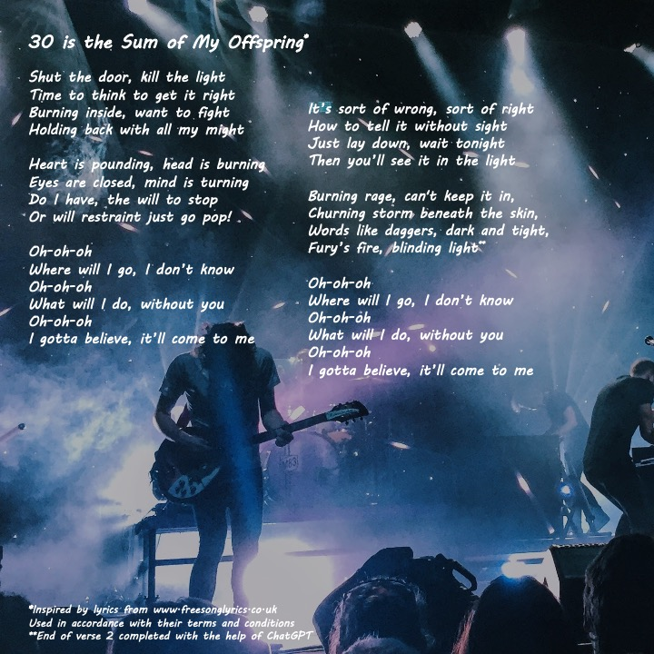
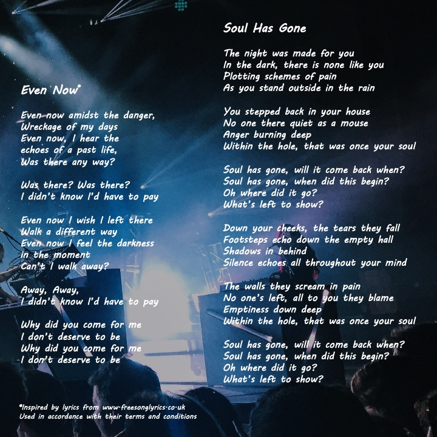
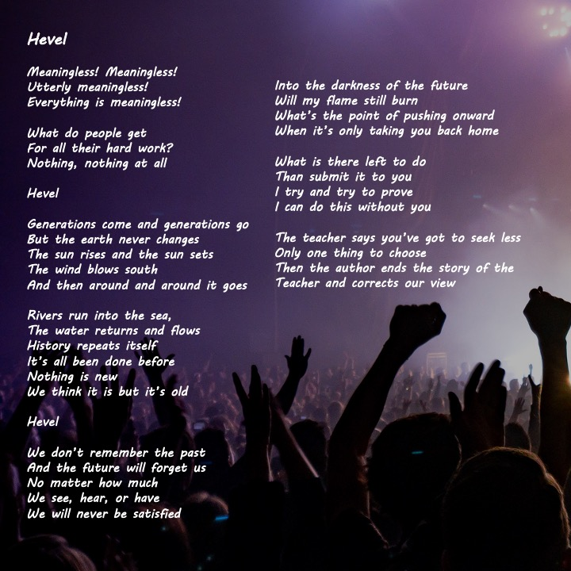
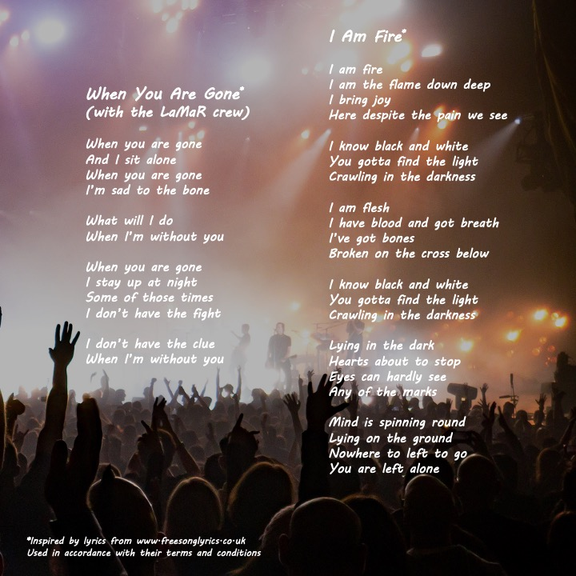
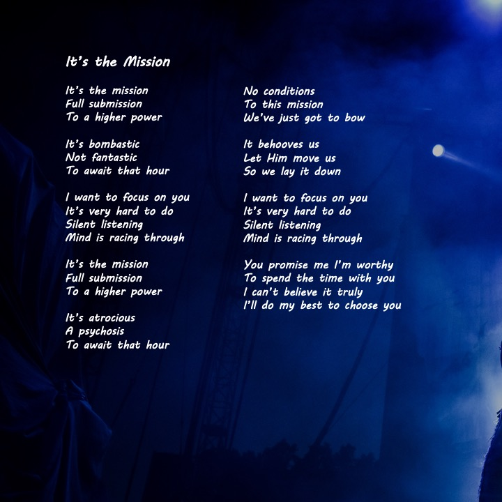
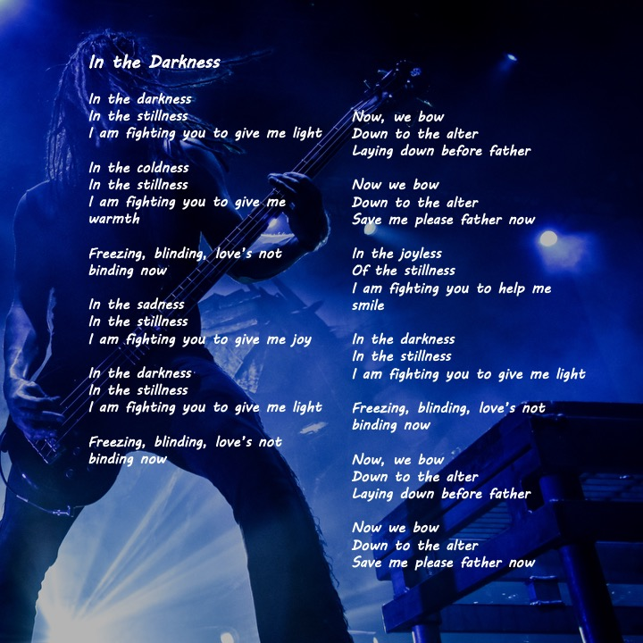
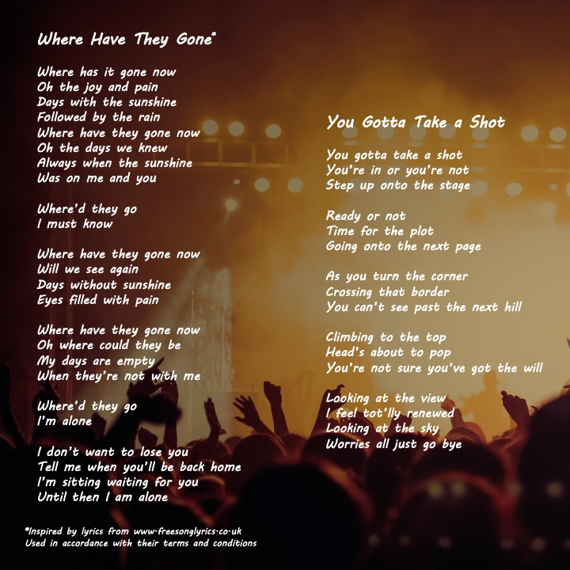
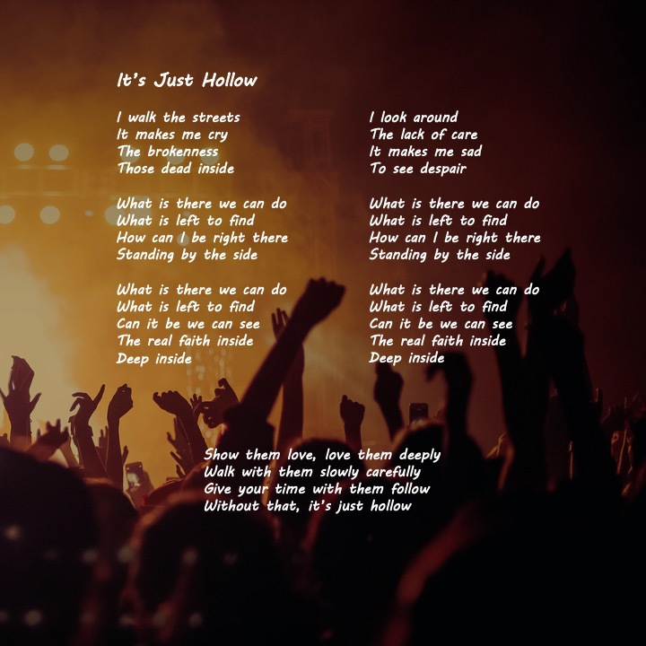

<!DOCTYPE html>
<html lang="en">
<head>
  <meta charset="UTF-8" />
  <meta name="viewport" content="width=device-width, initial-scale=1.0"/>
  <title>Where Do We Go From Here?/title>

  <link rel="stylesheet" href="style.css">
  <script src="https://unpkg.com/page-flip/dist/js/page-flip.browser.js"></script>
</head>

<body>

  <h1>Where Do We Go From Here?</h1>

  <div class="controls">
    <button id="prevBtn">◀ Prev</button>
    <button id="nextBtn">Next ▶</button>
  </div>

  <!-- Flipbook -->
  <div id="book">

    <!-- Opening spread -->
    <div class="page dummy-page"></div>
    <div class="page"></div>

    <!-- Interior pages -->
    <div class="page"></div>
    <div class="page"></div>
    <div class="page"></div>
    <div class="page"></div>
    <div class="page"></div>
    <div class="page"></div>
    <div class="page"></div>
    <div class="page"></div>
    <div class="page"></div>

    <!-- Closing spread -->
    <div class="page dummy-page"></div>

  </div>

  <!-- Mobile version -->
  <div id="mobilePages">
    
    
    
    
    
    
    
    
    
    
  </div>

  <!-- Sound -->
  <audio id="flipSound" preload="auto">
    <source src="page-flip.mp3" type="audio/mpeg">
  </audio>

  <script>
    const sound = document.getElementById("flipSound");

    function playFlip() {
      if (!sound) return;
      sound.pause();
      sound.currentTime = 0;
      sound.play().catch(() => {});
    }

    let lastFlipSoundTime = 0;

    function triggerFlipSound() {
      const now = Date.now();
      if (now - lastFlipSoundTime < 300) return;
      lastFlipSoundTime = now;
      playFlip();
    }

    // Only initialize flipbook on larger screens
    if (window.innerWidth > 700) {
      const bookElement = document.getElementById("book");

      const pageFlip = new St.PageFlip(bookElement, {
        width: 512,
        height: 512,
        size: "stretch",
        minWidth: 250,
        maxWidth: 1100,
        minHeight: 250,
        maxHeight: 1100,
        drawShadow: false,
        maxShadowOpacity: 0,
        showCover: false,
        mobileScrollSupport: true,
        usePortrait: true,
        autoSize: true,
        flippingTime: 700,
        useMouseEvents: true,
        disableFlipByClick: false
      });

      pageFlip.loadFromHTML(document.querySelectorAll("#book .page"));

      document.getElementById("nextBtn").addEventListener("click", () => {
        triggerFlipSound();
        pageFlip.flipNext("top");
      });

      document.getElementById("prevBtn").addEventListener("click", () => {
        triggerFlipSound();
        pageFlip.flipPrev("top");
      });

      // Sound when dragging starts
      bookElement.addEventListener("pointerdown", () => {
        triggerFlipSound();
      });
    }
  </script>

</body>
</html>